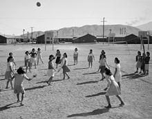

Origins

In the winter of 1895, in Holyoke, Massachusetts (United States), William G. Morgan, a YMCA physical education director, created a new game called Mintonette,
a name derived from the game of badminton, as a pastime to be played (preferably) indoors and by any number of players. The game took some of its characteristics
from other sports such as baseball, tennis and handball. Another indoor sport, basketball, was catching on in the area, having been invented just ten miles
(sixteen kilometres) away in the city of Springfield, Massachusetts, only four years before. Mintonette was designed to be an indoor sport, less rough than basketball,
for older members of the YMCA, while still requiring a bit of athletic effort.
The first rules, written down by William G. Morgan, called for a net 6 ft 6 in (1.98 m) high, a 25 ft × 50 ft (7.6 m × 15.2 m) court, and any number of players.
A match was composed of nine innings with three serves for each team in each inning, and no limit to the number of ball contacts for each team before sending
the ball to the opponents' court. In case of a serving error, a second try was allowed. Hitting the ball into the net was considered a foul (with loss of the point
or a side-out)—except in the case of the first-try serve.
After an observer, Alfred Halstead, noticed the volleying nature of the game at its first exhibition match in 1896, played at the International YMCA Training School
(now called Springfield College), the game quickly became known as volleyball (it was originally spelled as two words: "volley ball"). Volleyball rules were slightly
modified by the International YMCA Training School and the game spread around the country to various YMCAs.
In the early 1900s Spalding, through its publishing company American Sports Publishing Company, produced books with complete instruction and rules for the sport.
Refinements and later developments

The first official ball used in volleyball is disputed; some sources say Spalding created the first official ball in 1896, while others claim it was created in 1900.
The rules evolved over time: in 1916, in the Philippines, the skill and power of the set and spike had been introduced, and four years later a "three hits" rule
and a rule against hitting from the back row were established. In 1917, the game was changed from requiring 21 points to win to a smaller 15 points to win. In 1919,
about 16,000 volleyballs were distributed by the American Expeditionary Forces to their troops and allies, which sparked the growth of volleyball in new countries.
The first country outside the United States to adopt volleyball was Canada in 1900. An international federation, the Fédération Internationale de Volleyball (FIVB),
was founded in 1947, and the first World Championships were held in 1949 for men and 1952 for women. The sport is now popular in Brazil, in Europe (where especially
Italy, the Netherlands, and countries from Eastern Europe have been major forces since the late 1980s), in Russia, and in other countries including China and the rest of
Asia, as well as in the United States. A nudist/naturist volleyball game at the Sunny Trails Club during the 1958 Canadian Sunbathing Association (CSA) convention in
British Columbia, Canada
Beach volleyball, a variation of the game played on sand and with only two players per team, became a FIVB-endorsed variation in 1987 and was added to the
Olympic program at the 1996 Summer Olympics. Volleyball is also a sport at the Paralympics managed by the World Organization Volleyball for Disabled.
Nudists were early adopters of the game with regular organized play in clubs as early as the late 1920s. By the 1960s, a volleyball court had become standard
in almost all nudist/naturist clubs.
Volleyball in the Olympics
Volleyball has been part of the Summer Olympics program for both men and women consistently since 1964.
Men's winners
The first two editions of the volleyball Olympic tournament were won by the Soviet Union team. Bronze in 1964 and silver in 1968, Japan won gold in 1972.
In 1976, the introduction of a new offensive skill, the back row attack, helped Poland win the competition over the Soviets in a very tight five-setter.
In 1980, many of the strongest teams in men's volleyball belonged to the Eastern Bloc, so the American-led boycott of the 1980 Summer Olympics did not
have as great an effect on these events as it had on the women's. The Soviet Union collected their third Olympic gold medal with a 3–1 victory over Bulgaria.
With a Soviet-led boycott in 1984, the United States confirmed their new volleyball leadership in the Western World by sweeping smoothly over Brazil at the finals.
In that edition a minor nation, Italy, won their first medal, but Italy would rise to prominence in volleyball in later decades. A long-awaited confrontation between
the US and Soviet volleyball teams came in the 1988 final: powerplayers Karch Kiraly and Steve Timmons pushed the United States to a second gold medal setting the
issue in favor of the Americans.
In 1992, Brazil upset favorites Unified Team, Netherlands, and Italy for their first Olympic championship. Runners-up Netherlands, with Ron Zwerver and Olof van der
Meulen, came back in the following edition for a five-set win over Italy. In spite of their success in other major volleyball competitions in the 1990s, Italy did not
fare well at the Olympics. After winning bronze in Atlanta, Serbia and Montenegro, led by Vladimir and Nikola Grbić, beat Russia at the final in 2000 to secure the gold
(in 1996 and 2000 they played under the name Federal Republic of Yugoslavia).
In 2004, Brazil beat Italy in the final, adding a second gold medal to their record and confirming their role as the men's volleyball superpowers of the 2000s. In 2008,
United States beat Brazil in the final, winning their third gold medal. Russia won the bronze for the second time by defeating Italy. In the 2012 final, Russia came
back from a 0–2 set deficit, not letting the Brazilians take advantage of any of their 2 match points in the third set. Dmitriy Muserskiy scored 31 points, which is
an Olympic Games record in a final. Italy defeated Bulgaria and took Bronze.
After coming up short in the previous two editions of the Olympics as runners-up, the Brazilians captured their third gold medal in the history of the competition
playing home in 2016 after their straight-set victory against Italy in the final. The United States pulled off a comeback from a 0–2 deficit to claim the bronze
medal with a victory over Russia.
The 2020 tournament, held in 2021 due to the COVID-19 pandemic causing a delay, had the French team of Earvin N'Gapeth win it all over the Russians.[6] In a repeat
of the 1988 bronze medal match, Brazil were upset by neighbor Argentina.
Gold medals appear to be more evenly distributed in men's volleyball than in women's: former Soviet Union (three titles), United States (three) and Brazil (three)
are the only teams to have won the tournament more than once. The remaining six editions were won each by a different country. Despite being a major force in men's
volleyball since the 1990s, and never missing a tournament since 1976 Italy are still the only volleyball powerhouses that lack a gold medal at the Olympic Games.
Women's winners
Women's volleyball semifinals match between USA and South Korea at the 2012 Summer Olympics.
The opening edition of the volleyball Olympic tournament, in 1964, was won by the host nation Japan. There followed two victories in a row by the Soviet Union, in
1968 and 1972. South Korea were expected to get their first gold after beating Japan in the 1975 Pre-Olympic Games, but Japan came back again in 1976 for one last
Olympic gold before losing their status of women's volleyball superpowers.
The American-led boycott of the 1980 Games left many strong volleyball nations like Japan and South Korea out of the games. As a result, the Soviet Union easily
secured a third Olympic gold medal. In 1984, the Eastern bloc was, in its turn, boycotting the games, and the Soviet Union did not participate. As a result, host
nation United States won its first medals in volleyball, losing the finals to China. With eastern and western nations again involved in the Olympics, the Soviet
Union obtained a remarkable victory over Peru after trailing 0–2 in 1988's marking one of the most dramatic female matches of the 20th century. The 1988 games were,
however, boycotted by Cuba, who would become the next dominating force.
1992 saw a new force go down in Olympic history: organized under the name Unified Team, the nations of the former Soviet Union that chose to form a combined team
easily reached the gold medal game, but did not resist the power play of the young, rising Cuban squad. Led by superstars Mireya Luis and Regla Torres, Cuba would
eventually set the record for consecutive wins in the Olympic Games by also taking the gold in 1996 and 2000 against China and Russia, respectively.
In 2004, the winners were once again China. Second were Russia who beat Brazil in a very tough and dramatic semifinal match after being down 1–2, 19–24 in the fourth set.
In 2008, Brazil finally won the gold, beating the United States in the final and losing only one set in the competition. China were awarded the bronze by beating Cuba.
After a troubled start, Brazil secured the double gold in 2012 after beating the United States once again in the final.[8] Japan won the bronze medal after defeating South Korea.
In 2016, home team Brazil were favorites to once again win the title, thus equalling Cuba's three consecutive gold medals between 1992 and 2000. After winning all of
their preliminary round matches without dropping a set, the team was, however, stunned by a young Chinese squad in a tiebreaker in the quarterfinals. China went on to
win the title, their third in Olympic history, by beating Serbia in four sets in the gold medal match.[9] In the process, Lang Ping became the first person to win a
gold medal as a player in Los Angeles 1984 and repeat the feat now as a coach in Rio de Janeiro.[10] China also became the first team to win the Olympics after losing
three matches in the preliminary round. The United States defeated Netherlands 3–1 to capture the bronze medal.[11]
In the fifteenth edition of the games in 2020, the United States faced Brazil for the third final in four editions, only this time they broke the long title drought.
Thus the Americans became only the sixth country to win the women's tournament, after Brazil, China, Cuba, Japan, and the former Soviet Union.[12] Serbia got the bronze,
beating South Korea.